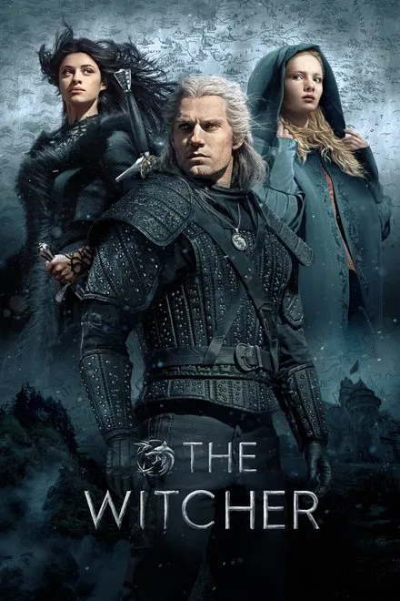
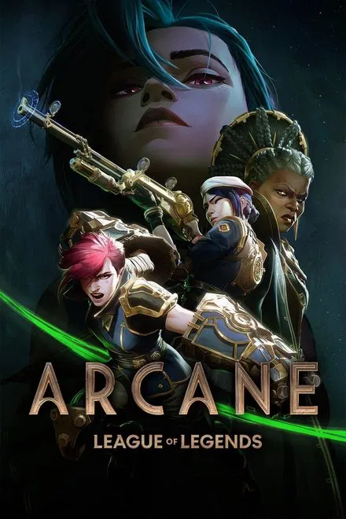

|
 |
 |
 |  |  |
|---|---|---|---|---|---|
| Overview Under the direction of a ruthless instructor, a talented young drummer begins to pursue perfection at any cost, even his humanity. Damien Chazelle |
Overview Batman raises the stakes in his war on crime. With the help of Lt. Jim Gordon and District Attorney Harvey Dent, Batman sets out to dismantle the remaining criminal organizations that plague the streets. The partnership proves to be effective, but they soon find themselves prey to a reign of chaos unleashed by a rising criminal mastermind known to the terrified citizens of Gotham as the Joker. |
Overview A true story of two men who should never have met – a quadriplegic aristocrat who was injured in a paragliding accident and a young man from the projects. |
Overview Geralt of Rivia, a mutated monster-hunter for hire, journeys toward his destiny in a turbulent world where people often prove more wicked than beasts. |
Overview Amid the stark discord of twin cities Piltover and Zaun, two sisters fight on rival sides of a war between magic technologies and clashing convictions. |
Overview The continuing story of Peacemaker, a vainglorious superhero/supervillain who believes in peace at any cost — no matter how many people he has to kill. After a miraculous recovery from his duel with Bloodsport, Peacemaker soon discovers that his freedom comes at a price. |